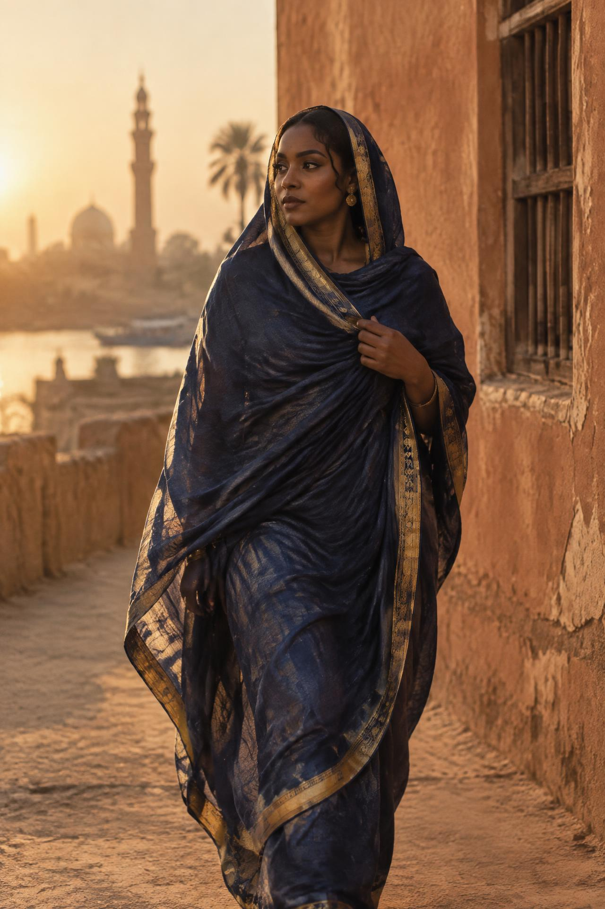
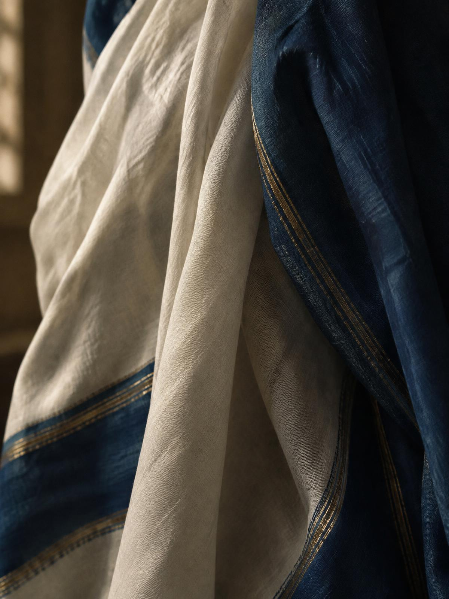
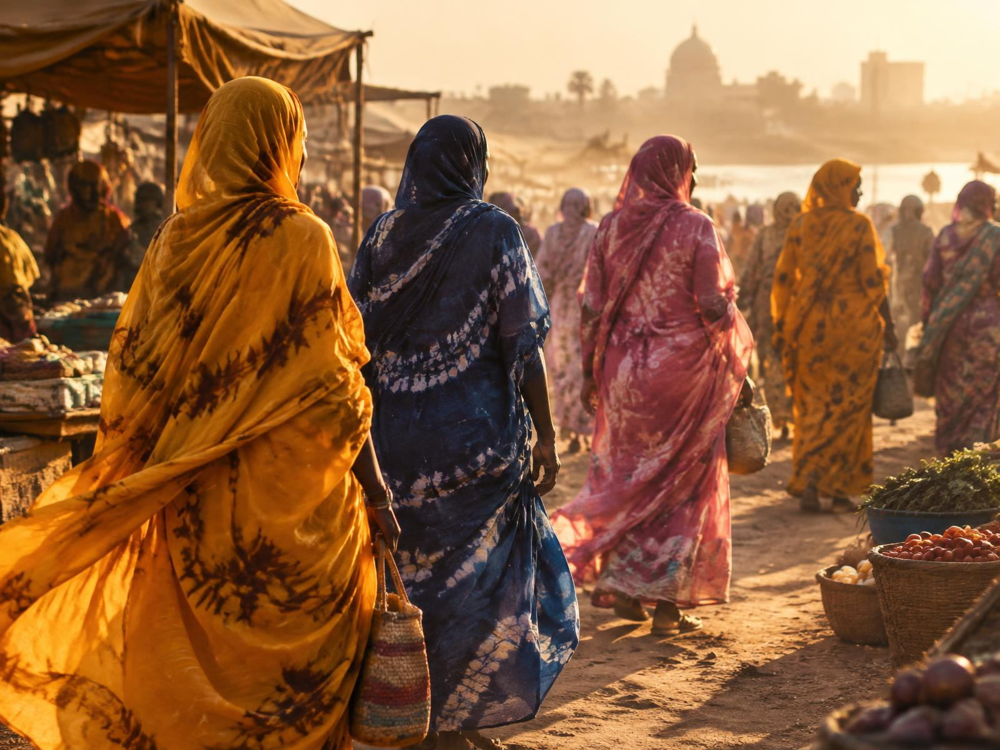
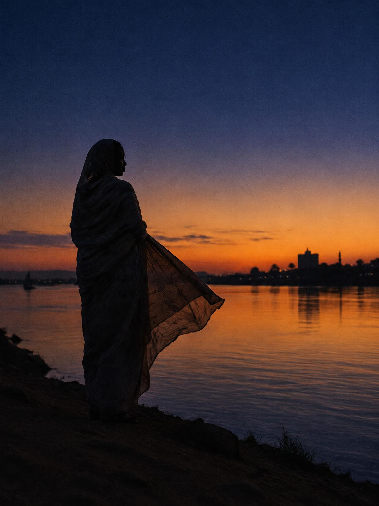

A Cinematic Cultural Editorial
التوب السوداني
Six metres of cloth. One gesture of the wrist. A garment that has carried the grace, dignity and defiance of Sudanese women for generations.
Chapter 01 — The Cloth
Cotton grown on the river's banks, dyed in indigo vats older than memory.
The tobe is a single length of fabric — often five to eight metres — yet it is never simply fabric. Wrapped, pleated and folded over the shoulder in one practiced motion, it becomes architecture: a silhouette that moves with the woman inside it and holds its form like a quiet promise.
Its most cherished form is the toob falla, tie-dyed by hand so that no two cloths repeat. Indigo for depth, saffron for ceremony, rose for tenderness — each pattern a dialect spoken only in cloth.


"A woman who wraps her tobe well wraps her whole world in order."
Sudanese proverb — مثال سوداني
Chapter 02 — The Drape
There is no clasp, no button, no stitch. Only the body and the cloth, negotiating.
The drape is learned in girlhood, watching mothers and aunts: cloth gathered, tension checked with the fingertips, then thrown over the left shoulder in a single arc. Done well, the fold sits like a crown. It signals readiness — for prayer, for a wedding, for the market, for grief.
Through weddings and revolutions, the tobe has been ceremony and armour at once. In December 2018, images of women in white tobés standing atop cars led marches — the garment became a banner without a single word printed on it.
Chapter 03 — The River
Where the Blue Nile and White Nile meet, the cloth meets the evening wind.
At the confluence, the tobe loosens. The working day dissolves into the long amber hour, and fabric that stood all day in formal pleats begins to move — lifting, breathing, refusing to be still. It is in these moments that the garment looks least like clothing and most like weather.
The editorial closes where Sudan's story always returns: the river, the horizon, and a woman in cloth watching both without hurry.

The everyday classic — depth, calm and the deep water of the Nile.
Weddings and celebration; the colour of ghee, sun and joy.
Tenderness and youth — a favourite for visits and Eid mornings.
The ceremonial white — worn at prayer, and at protest.
الثوب ما هو إلا حكاية… والمرأة هي الراوية
"Cloth is only a story — the woman is the one who tells it."
The Sudanese Tobe · An editorial by Kaze Studio